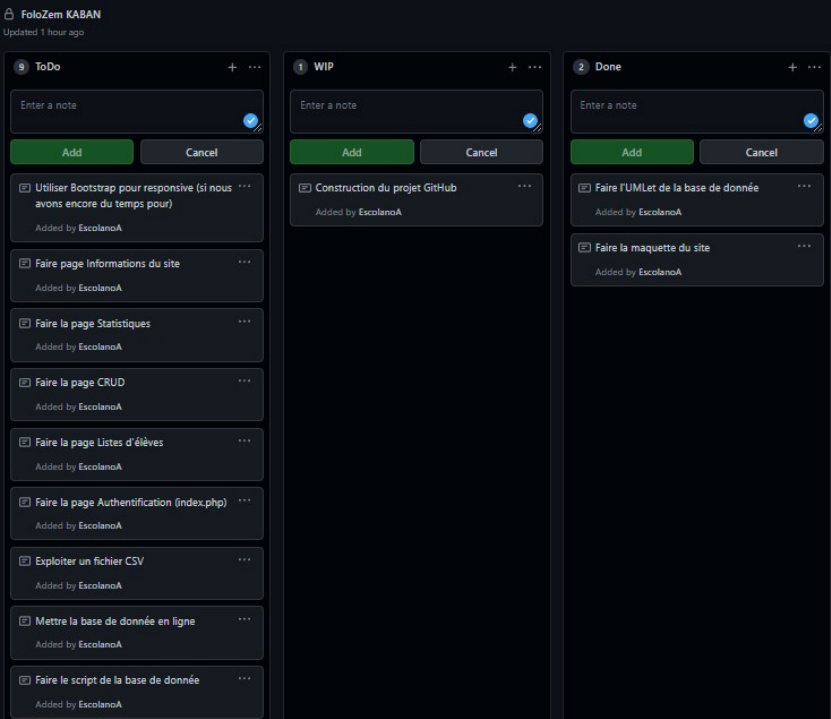
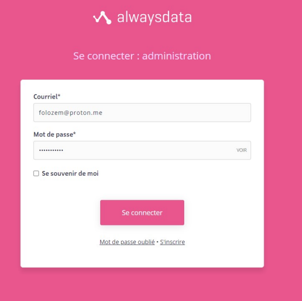
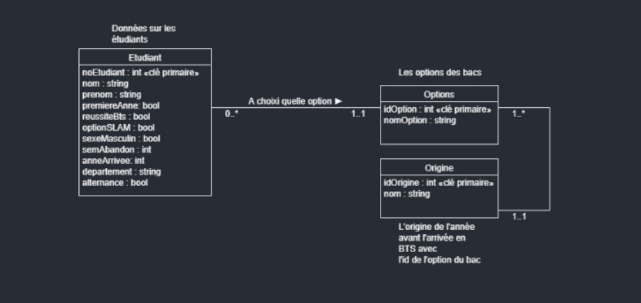
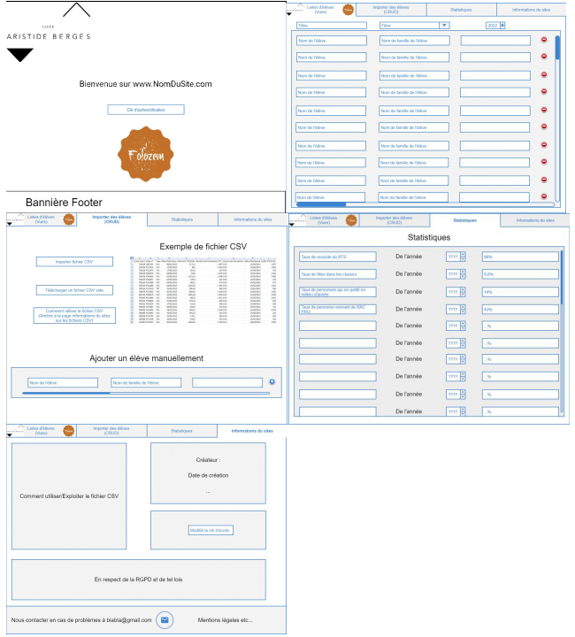
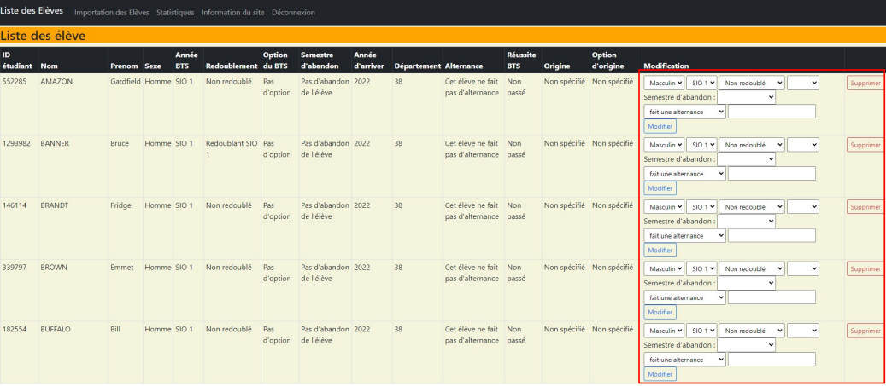
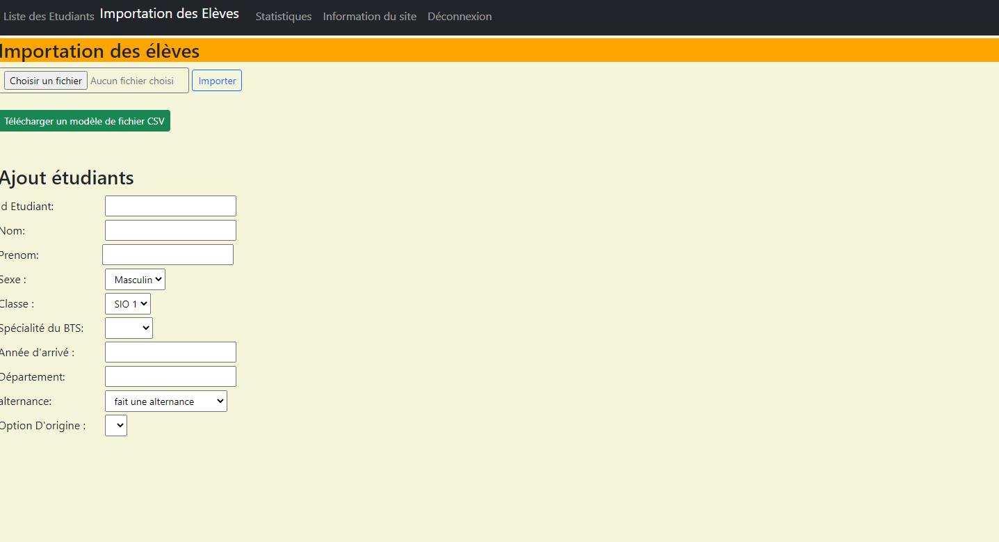
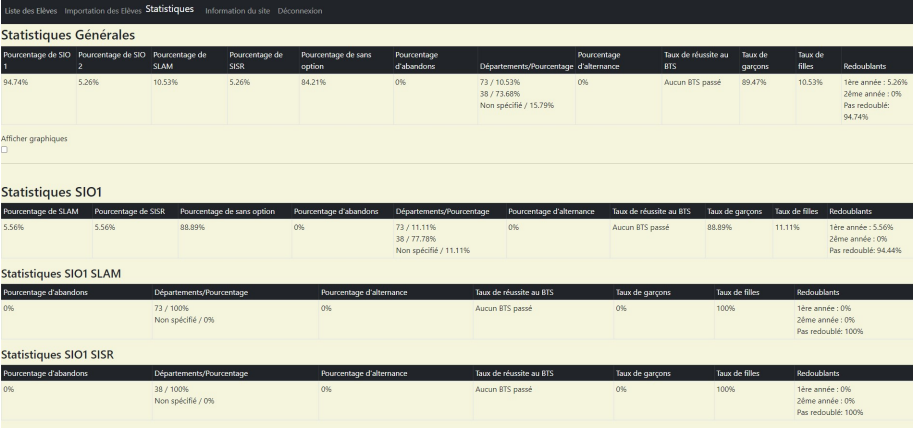
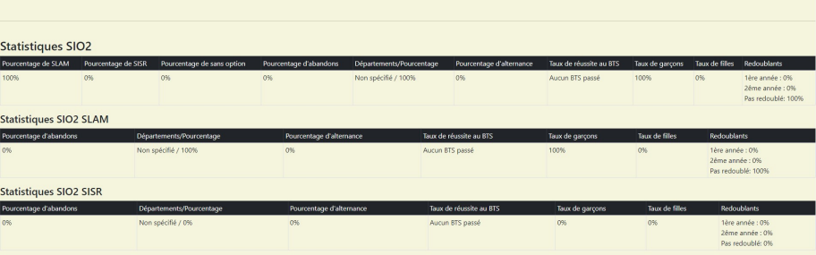
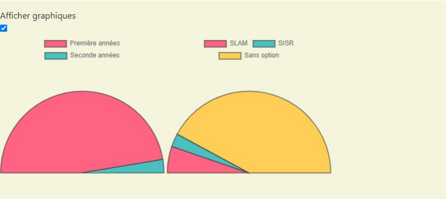
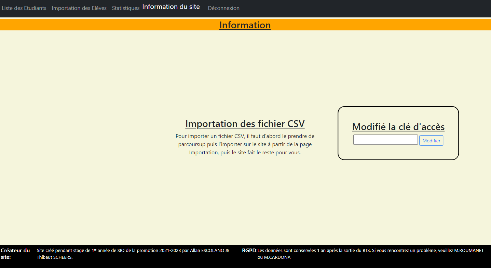

Lycée Aristide Bergès
- Etablissement de l'éducation nationale
- Formations académiques niveau lycée et études supérieures
Sous la tutelle de :
Mr.ROUMANET (Professeur de Dev)
Mr.LAGACHE (Professeur de BDD)
Chef de l'entreprise :
Mme.BUËR (Proviseure du lycée)
La mission :
- Plateforme web en ligne
- Suivi des éléves de BTS
- Effectuer des statistiques
- Exploitation des fichiers CSV de parcoursup
- Suivre le cahier des charges
Le cahier des charges :
Rédigé par mes deux tuteurs
- Modélisation de données avec UML
- Programmation PHP en utilisant le design pattern MVC
- Importation lecture de fichiers CSV
- Graphiques JavaScript (framework chart.js)
- Aspect graphique Bootstrap
- Exploitation des données avec format JSON
Statistiques attendues :
- Taux de réussite de la promotion (SLAM/SISR)
- Taux d'abandon général sur les deux ans (avec abandons de chaque
semestres)
- Taux de filles/garçons
- Des statistiques par BAC et département d'origine
- Taux d'apprenti (par option et par année)
- Répartition SLAM/SISR (avec bac d'origine)
- Taux de stage en entreprise/organisation (par option)
- Taux de redoublants (par année)
- Rajout de statistiques supplémentaires possible
Début du projet




Codage
Codage.
Codage..
Codage...
Codage
Codage.
Codage..
Codage...
Page de la liste des élèves

Page d'importation d'élèves

Page des statistiques


graphiques des statistiques

Page d'informations du site
